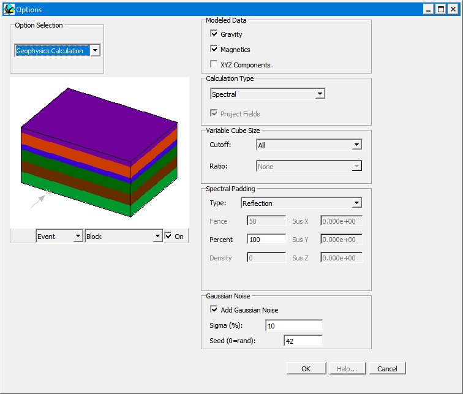

Gaussian petrophysical noise
NewGaussian noise was added in the Qt version.
Real rocks are not uniform. To make synthetic data look more like field data you can add random variation to the density and magnetic susceptibility of every voxel before the anomalies are calculated. The settings are in the Gaussian Noise group of .

| Setting | Meaning |
|---|---|
| Add Gaussian Noise | Turns the noise on or off. Off by default. |
| Sigma (%) | Standard deviation of the noise as a percentage of each value. Each voxel's density and susceptibility are multiplied by
1 + (sigma/100) × N(0,1), drawn independently for every voxel. Values are never allowed to go below zero. Default 1 %. |
| Seed (0=rand) | 0 gives a different noise pattern every time anomalies or blocks are calculated. Any other value gives the same pattern every time, so previews, block exports and anomaly calculations all use identical noise. |
The noise is applied wherever density and susceptibility volumes are built: anomaly calculations, block model exports and the Tomofast-x/TransD exports. It is not visible in the geological block diagram colours. The settings are saved in the history file.
Noddy · open source under the MIT licence · Loop3D/noddy_qt